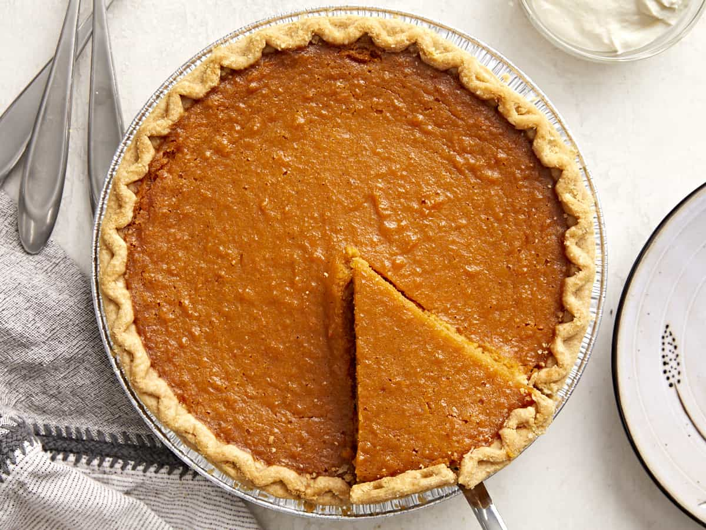

Sweeet Potato Pie

Description
This is a quick recipe to make the most delicious sweet potato pie. This recipe is a staple in North Carolina, where they produce more sweet potatoes than
anywhere else in the world.
Ingredients
- 1 pie crust
- 3 medium sweet potatoes
- 1/2 cup butter, melted
- 1 cup sugar
- 2 teaspoons vanilla extract
- 2 large eggs, beaten
- 1/2 cup milk
Steps
- Boil the sweet potatoes until fork tender.
- After potatoes are cooled remove the skin.
- Beat the eggs and mix all of the ingredients with a handmixer.
- Pour the mixture into the pie crust.
- Bake the pie on 350 degrees farenheit until the center of the pie is set.
- Remove from the over, let cool, then enjoy.